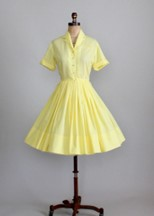
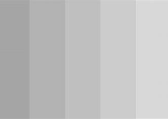
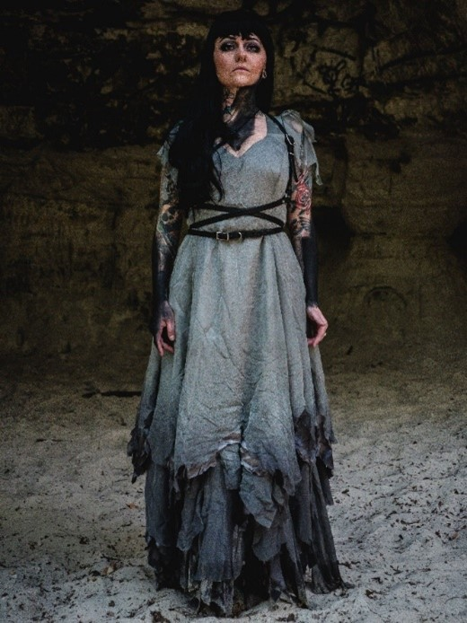

Gwynevere Deterding
.jpg)
Bio
Gwynevere Deterding, from Blue Springs, MO, is a senior at the University of Alabama majoring in dance and computer science. Gwynevere began her dance training at Tajazz School of Dance and later trained at City in Motion Dance Theater and Blue Springs Ballet. While at the University of Alabama, she has performed in productions of Alabama Repertory Dance Theatre, Dance Alabama!, and Emerging Choreographers’ Showcase, as well as appearing in screendances in the Dance Alabama Film Festival. She was also a member of Yonder Contemporary Dance Company, with whom she performed at the Edinburgh Fringe Festival. She has furthered her dance training at intensives including The Ailey School and The USA IBC Dance School. Recently, she received the Outstanding Junior Award from UA Theatre and Dance. Her choreography has been seen in Dance Alabama!, and she is excited to premiere her work "At a Crossroads" in the Emerging Choreographers' Showcase.
Artist Statement
Artist Statement Blah
Rehearsal Documentation
Rehearsal Documentation
Rehearsal Report #1
Rehearsal Report #2
Rehearsal Report #3
Rehearsal Report #4
Rehearsal Report #5
Rehearsal Report #6
Dance Concept Summary
My piece “At a Crossroads” explores transitional stages in life where you must decide what path to take next. It is inspired by the novel The Bell Jar by Sylvia Plath, specifically the scene where the main character compares her life and its future possibilities to the branches and fruit on a fig tree, and imagines starving to death in the crotch of the tree while the figs fall and rot at her feet due to her inability to choose just one. I want to explore the paralyzing indecision and anxiety that can surround planning your future path, dealing with conflicting aspirations, and the fear of making the wrong choice. I want to communicate to the audience that we all have moments in life where we are unsure of the direction we are headed and are paralyzed by indecision, but it is important to take a leap onto a path even if it is scary and see where it leads you, rather than letting the fear of the unknown consume you. The work follows an individual in a dreamlike state who is surrounded by manifestations of her potential futures, and she is pulled in different directions as she tries to decide on a path. Each of the other dancers represents a different future path for the individual. The first section of the work will be set to Gardermoen by Julia Kent and the movement will be curious and investigative as the individual explores the different pathways that she might take. The second section of the work will be set to Tempelhof by Julia Kent, and the movement will become increasingly frantic and urgent as the individual becomes overwhelmed by all of the possibilities, and fears that choosing one path will lead to losing all of the others. Some movement ideas that I would like to explore are contact and partnering, pulling, opposing forces, and following impulses. I would also like to explore creating structures and images with my dancers such as the bell jar, the fig tree, and winding pathways.
Costume Treatment
Choreographer(s): Gwynevere Deterding
Cast Size: 7 dancers
Music/Sound: Gardermoen and Tempelhof by Julia Kent
Dance Style: Contemporary
Name of Piece: At A Crossroads
Inspiration:
What inspired the creation of your piece?
The creation of my piece was inspired by the novel The Bell Jar by Sylvia Plath, specifically the fig tree metaphor where the narrator relates her life and its future paths and possibilities to the fruit hanging from the branches of a fig tree and imagines the fruit falling and rotting at her feet due to her inability to choose only one.
How has that original inspiration evolved through your process?
While the original inspiration still stands, it has evolved to become additionally inspired by my own experiences of transitional periods in my life where I’ve had conflicting aspirations and felt paralyzed by tough decisions. I have one dancer who represents the person stuck at a crossroads, and the other dancers reflect potential future paths that that person could choose.
Purpose of your work:
What is the point or purpose of the work itself?
The purpose of the work is to depict the experience of being stuck at a crossroads in life, and feeling pulled in different directions. Sometimes we feel like we have to give up on one dream we’ve had in order to pursue another, and sometimes we are so paralyzed by tough decisions that it is hard to keep moving forward.
What mood and/or emotions are you aiming to invoke with the performance of your finished work?
I want to invoke a dark and haunting mood, and I want the audience to feel a little bit of the anxiety and fear that comes with making tough decisions.
What message are you trying to communicate to the viewer/audience? What are you hoping they take away from experiencing your work?
I want to communicate to the audience that we all have moments in life where we are unsure of the direction we are headed and are paralyzed by indecision, but it is important to take a leap onto a path even if it is scary and see where it leads you, rather than letting the fear of the unknown consume you.
Describe your piece in 3-5 adjectives:
Tense, Haunting, Urgent, Frantic
Costume Research:
I want my lead dancer to be dressed in a 1960s style collared dress similar to the one pictured below. I want the rest of the cast in other individual 1960s silhouettes but for their dresses to be gray and for the skirt and the sleeves to be tattered/worn looking to appear like ghostly representations of the lead. I want everyone to have their own silhouette to help show that they are each representing a different pathway.
Kylie's Silhouette (Lead)
MO's Silhouette
Liz's Silhouette
Anna's Silhouette
Hillary's Silhouette
Lauren's Silhouette
Maia's Silhouette
Lead Color Palette: I chose pastel pink for the lead’s dress because I want her to represent femininity and the innocence of a young adult chasing after their dreams
Corps Color Palette: I chose gray for the corps in order to create a look of ghostliness and decay
This is my inspiration for what the corps dresses will look like when gray and tattered, except the skirts will be shorter.
Sourcing/Alteration: Since the dresses are vintage, I would like to try to thrift them. The corps dresses will need to be distressed using a variety of techniques discussed with Tiffany.
Playbill
Rehearsal Documentation
https://alabama.box.com/s/prl4nz9xkcrg7p8tl9i7exfa0k5jvkly
This link contains my rehearsal videos from the semester.
Overall Reflection on Feedback Received from Peers, Instructors, and Faculty Mentors
My faculty mentor and my peers during the movement study 2 presentation recommended that I further develop each of the individual characters in my work. I have started doing this by assigning each dancer a future path to represent and giving them phrase work containing abstracted gestures that would be performed by that individual. Fen also recommended that I have individual conversations with each dancer about their character and motivations to help them be able to embody the character I want them to portray, so that is something I want to do in the spring semester. In my feedback from the instructors, they mentioned that some of the relationships between dancers weren’t clear in terms of the narrative I was trying to portray, so that is another thing that I will be working on tweaking. Fen also mentioned considering what the group represents when they are together as a collective and creating structures versus when they are their own individuals. They talked about how the group being together could represent the idea of “choice” as a whole. I was also told to keep returning to the tree and path structures that are present in the beginning of the work, so I have begun including more of those in the work and experimenting with my dancers on the creation of new structures. As I continue to develop this work in the spring, I want to explore partnering some more and make the choices that the lead dancer is making come across clearer.